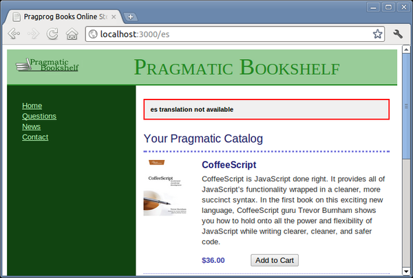

Figure 31. English version of the front page
We start by creating a new configuration file that encapsulates our knowledge of what locales are available and which one is to be used as the default.
| rails31/depot_s/config/initializers/i18n.rb | |
#encoding: utf-8 |
|
I18n.default_locale = :en |
|
LANGUAGES = [ |
|
['English', 'en'], |
|
["Español".html_safe, 'es'] |
|
] |
|
This code is doing two things.
The first thing it does is use the I18n module to set the default locale. I18n is a funny name, but it sure beats typing out internationalization all the time. Internationalization, after all, starts with an i, ends with an n, and has eighteen letters in between.
Then it defines a list of associations between display names and locale names. Unfortunately, all we have available at the moment is a U.S. keyboard, and español has a character that can’t be directly entered via our keyboard. Different operating systems have different ways of dealing with this, and often the easiest way is to simply copy and paste the correct text from a website. If you do this, just make sure your editor is configured for UTF-8. Meanwhile, we’ve opted to use the HTML equivalent of “n con tilde” character in Spanish. If we didn’t do anything else, the markup itself would be shown. But by calling html_safe, we inform Rails that the string is safe to be interpreted as containing HTML.
To get Rails to pick up this configuration change, the server needs to be restarted.
Since each page that is translated will have an en and es version (for now, more will be added later), it makes sense to include this in the URL. Let’s plan to put the locale up front, make it optional, and have it default to the current locale, which in turn will default to English.
To implement this cunning plan, let’s start with modifying config/routes.rb:
| rails31/depot_s/config/routes.rb | |
Depot::Application.routes.draw do |
|
get 'admin' => 'admin#index' |
|
controller :sessions do |
|
get 'login' => :new |
|
post 'login' => :create |
|
delete 'logout' => :destroy |
|
end |
|
| * | scope '(:locale)' do |
resources :users |
|
resources :orders |
|
resources :line_items |
|
resources :carts |
|
resources :products do |
|
get :who_bought, on: :member |
|
end |
|
root to: 'store#index', as: 'store' |
|
| * | end |
end |
|
What we have done is nested our resources and root declarations inside a scope declaration for :locale. Furthermore, :locale is in parentheses, which is the way to say that it is optional. Note that we did not choose to put the administrative and session functions inside this scope, because it is not our intent to translate them at this time.
What this means is that both http://localhost:3000/ will use the default locale, namely, English, and therefore be routed exactly the same as http://localhost:3000/en. http://localhost:3000/es will route to the same controller and action, but we will want this to cause the locale to be set differently.
To do this, we need to create a before_filter and to set the default_url_options. The logical place to do both is in the common base class for all of our controllers, which is ApplicationController:
| rails31/depot_s/app/controllers/application_controller.rb | |
class ApplicationController < ActionController::Base |
|
| * | before_filter :set_i18n_locale_from_params |
# ... |
|
protected |
|
| * | def set_i18n_locale_from_params |
| * | if params[:locale] |
| * | if I18n.available_locales.include?(params[:locale].to_sym) |
| * | I18n.locale = params[:locale] |
| * | else |
| * | flash.now[:notice] = |
| * | "#{params[:locale]} translation not available" |
| * | logger.error flash.now[:notice] |
| * | end |
| * | end |
| * | end |
| * | |
| * | def default_url_options |
| * | { locale: I18n.locale } |
| * | end |
end |
|
This set_i18n_locale_from_params does pretty much what it says: it sets the locale from the params, but only if there is a locale in the params; otherwise, it leaves the current locale alone. Care is taken to provide a message for both the user and the administrator when there is a failure.
And default_url_options also does pretty much what it says, in that it provides a hash of URL options that are to be considered as present whenever they aren’t otherwise provided. In this case, we are providing a value for the :locale parameter. This is needed when a view on a page that does not have the locale specified attempts to construct a link to a page that does. We will see that in use soon.
With this in place, we can see the results in Figure 31, English version of the front page.
|
|
Figure 31. English version of the front page |
At this point, the English version of the page is available both at the root of the website and at pages that start with /en. Additionally, a message on the screen says that the translation is not available (as we can see in Figure 32, Translation not available), which will also leave a message in the log indicating that the file wasn’t found. It might not look like it, but that’s progress.
|  |
|
Figure 32. Translation not available |